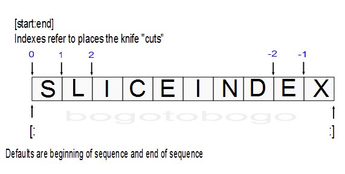

Python string
Python has two build-in types of strings: str holds bytes, and unicode holds Unicode characters. If we only deal with 7-bit ASCII characters (characters in the range of 0-127), we can save some memory by using strs. However, we should be careful if we use an 8-bit character set. In general, it is not always possible simply by examining the bytes to determine which 8-bit encoding is used for a particular string. But the safest way is to use strs for 7-bit ASCII and for raw binary 8-bit bytes, and unicode otherwise.
Note: Good news is that Python 3.x doesn't have a special Unicode string type/class. Every string is a Unicode string.
Python strings are fairly easy to use. But there are so many ways to write them in our code:
>>> # Single quotes
>>> print('P"casso')
P"casso
>>> # Double quotes
>>> print("P'casso")
P'casso
>>> # Tripple quotes
>>> print('''...Picasso...''')
...Picasso...
>>> # Escape sequences
>>> print("P\ti\nca\Osso")
P i
ca\Osso
>>> #Raw strings
>>> print(r"C:\myscript.py")
C:\myscript.py
>>> # Byte strings
>>> print(b'Picas\x01so')
b'Picas\x01so'
>>> type(b'Picas\x01so')
<class 'bytes'>
>>> type('normal_string')
<class 'str'>
>>> # Unicode strings
>>> S = 'A\u00c4B\U000000e8C'
>>> S
'A-B-C'
>>> len(S)
5
>>>
Single and double quote characters are the same.
>>> 'Picasso', "Picasso"
('Picasso', 'Picasso')
The reason for supporting both is that it allows us to embed a quote character of the other variety inside a string without escaping it with a backslash.
>>> 'Mozart"s', "Mozart's"
('Mozart"s', "Mozart's")
Python concatenates adjacent string literals in any expression.
>>> masters = "Mozart " 'and' " Picasso" >>> masters 'Mozart and Picasso'
If we add commas between these strings, we'll have a tuple not a string.
>>> "Mozart\"s", 'Picasso\'s'
('Mozart"s', "Picasso's")
A backslash is representative of a general pattern in strings. Backslashes are used to introduce special byte coding, escape sequences.
Escape sequences let us embed byte codes in strings that cannot easily be type on a keyboard. The character \, and one or more characters following it in the string literal, are replaced with a single character in the resulting string object. The object has the binary value specified by the sequence. For instance, here is a five-character string that embeds a newline and a tab:
>>> s = 'a\nb\tc'
The two characters \n stand for a single character - the byte containing the binary value of the newline character in our character set which is ASCII code 10. The sequence \t is replaced with the tab character. The way this string looks when printed depends on how we print it. While the interactive echo shows the special characters as escapes, but print interprets them instead:
>>> s 'a\nb\tc' >>> print(s) a b c
We can check how many characters are in the string.
>>> len(s) 5
So, the string is five bytes long. It contains an ASCII a, a new line, an ASCII b, etc. The backslash characters are not really stored with the string in memory. They are just used to tell Python to store special byte values in the string. Here are string backslash characters:
| Escape | Meaning |
|---|---|
| \newline | Ignored (continuation line) |
| \\ | Backslash (stores one \) |
| \' | Single quotes (stores ') |
| \" | Double quotes (stores ") |
| \a | Bell |
| \b | Backspace |
| \f | Formfeed |
| \n | Newline (linefeed) |
| \r | Carriage return |
| \t | Horizontal tab |
| \v | Vertical tab |
| \xhh | Character with hex value hh (at most 2 digits) |
| \ooo | Character with octal value ooo (up to 3 digits) |
| \0 | Null: binary 0 character (doesn't end string) |
| \N{ id } | Unicode database ID |
| \uhhhh | Unicode 16-bit hex |
| \Uhhhhhhhh | Unicode 32-bit hex |
| \other | Not an escape (keeps both \ and other) |
Some escape sequences allow us to embed binary values into the bytes of a string. Here we have five-character string with two binary zeros:
>>> s = 'A\0B\0C' >>> s 'A\x00B\x00C'
The zero(null) byte does not terminate a string. Instead, Python keeps the string's length and text in memory. Here we have a string with a binary 1 and 2 (in octal) and 3 (hexa):
>>> s = '\001\002\x03' >>> s '\x01\x02\x03' >>> len(s) 3
Here, Python prints out nonprintable characters in hex, regardless of how they are specified. Here we have "Picasso", a tab, a newline, and a zero value coded in hex:
>>> s = "Pi\tcc\nas\x00so" >>> s 'Pi\tcc\nas\x00so' >>> print(s) Pi cc as
If Python does not recognize the character after a backslash (\) as an escape code, it simply keeps the backslash in the string:
>>> x = "Picas\so" >>> x 'Picas\\so' >>> len(x) 8
As memtioned before, Python 3.x doesn't have a special Unicode string type/class, and very string is a Unicode string. So, we do not need to use unichr() any more, we can just use chr() as in the example below.
>>> uro = chr(8364) >>> euro € >>> ord(euro) 8364 >>>
Let's look at the following code for opening a file:
>>> myfile = open('C:\new\text.txt', 'w')
Traceback (most recent call last):
File ...
myfile = open('C:\new\text.txt', 'w')
IOError: [Errno 22] Invalid argument: 'C:\new\text.txt'
The problem is that \n is considered as a newline character, and \t as a tab. This is where raw strings can do something. If the letter r (uppercase or lowercase) appears before the opening quote of a string, it suppresses the escape mechanism. The result is that Python keeps our backslash literally. In other words, backslashes are not handled in any special way in a string literal prefixed with 'r'. So r"\n" is a two-character string containing '\' and 'n', while "\n" is a one-character string containing a newline. Usually patterns will be expressed in Python code using this raw string notation.
So, to fix the filename problem, we can just add the letter r:
>>> myfile = open(r'C:\new\text.txt', 'w')
Or, since two backslashes are really an escape sequence for one backslash, we can keep our backslash by doubling them:
>>> myfile = open('C:\\new\\text.txt', 'w')
Actually, we sometimes need to this method when we should print strings with embedded backslashes:
>>> path = r'C:\new\text.txt' >>> path 'C:\\new\\text.txt' >>> print(path) C:\new\text.txt >>> len(path) 15
As we've seen in numeric representation, the default format at the interactive prompt prints results as they were coded. So, escape backslashes are in the output. The print provides a more user-friendly format that shows that there is actually only on backslash in each spot.
A block string is a string literal format with triple-quotes. It is for coding multiline text data.
>>> Python = """Python aims to combine "remarkable power with very clear syntax", and ...""" >>> Python 'Python aims to combine\n"remarkable power\nwith very clear syntax", and ...'
Though the string spans three lines, Python collects all the triple-quoted text into a single multiline string with embedded newline characters (\n) at the places where our code has line breaks.
If we print it instead of echoing:
>>> print(Python) Python aims to combine "remarkable power with very clear syntax", and ... >>>
We can access strong components by position because strings are order collections of characters.

Python offsets start at 0 and end at one less than the length of the string. It also lets us fetch items from sequences such as strings using negative offsets. A negative offset is added to the length of a string to derive a positive offset. We can also thing of negative offsets as counting backward from the end.
>>> S = 'Picasso'
>>> # Indexing from front and end
>>> S[0], S[-1], S[-4]
('P', 'o', 'a')
>>> # Slicing: extract a section
>>> S[1:3], S[2:], S[:-1]
('ic', 'casso', 'Picass')
The basics of slicing are straightforward. When we index a sequence object such as a string on a pair of offset separated by a colon, Python returns a new object containing the contiguous section. The left offset is taken to be the lower bound (inclusive) and the right is the upper bound (noninclusive). In other words, Python fetches all items from the lower bound up to but not including the upper bound. Then, it returns a new object containing the fetched items. If omitted, the left and right bounds default to o and the length of the object, respectively.
- Indexing
S[i] fetches components at offsets: - The first item is at offset 0.
- Negative indexes mean to count backward from the end or right.
- S[0] fetches the first item.
- S[-2] fetches the second item from the end (same as S[len(S)-2]).
- Slicing
S[i:j] extracts contiguous sections of sequences:- The upper bound is noninclusive.
- Slice boundaries default to 0 and the sequence length, if omitted.
- S[1:3] fetches items at offsets 1 up to but not including 3.
- S[1:] fetches items at offset 1 through the end (the sequence length).
- S[:3] fetches items at offset 0 up to but not including 3.
- S[:-1]fetches items at offset 0 up to but not including the last item.
- S[:] fetches items at offsets o through the end - this effectively performs a top-level copy of S.
The last item is very common trick. It makes a full top-level copy of a sequence object which is an object with the same value but a distinct piece of memory. This isn't very useful for immutable objects like strings but it is very useful for objects that may be changed in-place such as lists.
Slice expressions have an optional third index as a step or stride:
X[i:j:k]
That means "extract all the items in X, from offset i through j-1 by k."
>>> S = 'Edsger Dijkstra' >>> S[1:10:2] 'dgrDj' >>> S[::2] 'Ese ikta'
A stride of -1 indicates that the slice should go from right to left. The net effect is to reverse the sequence:
>>> S[::-1] 'artskjiD regsdE'
With a negative stride, the meanings of the first two bounds are reversed. In other words, the slice S[5:1:-1] fetches the items from 2 to 5, in reverse order:
>>> S = '01234567' >>> S[5:1:-1] '5432'
Python tutorial
Python Home
Introduction
Running Python Programs (os, sys, import)
Modules and IDLE (Import, Reload, exec)
Object Types - Numbers, Strings, and None
Strings - Escape Sequence, Raw String, and Slicing
Strings - Methods
Formatting Strings - expressions and method calls
Files and os.path
Traversing directories recursively
Subprocess Module
Regular Expressions with Python
Object Types - Lists
Object Types - Dictionaries and Tuples
Functions def, *args, **kargs
Functions lambda
Built-in Functions
map, filter, and reduce
Decorators
List Comprehension
Sets (union/intersection) and itertools - Jaccard coefficient and shingling to check plagiarism
Hashing (Hash tables and hashlib)
Dictionary Comprehension with zip
The yield keyword
Generator Functions and Expressions
generator.send() method
Iterators
Classes and Instances (__init__, __call__, etc.)
if__name__ == '__main__'
argparse
Exceptions
@static method vs class method
Private attributes and private methods
bits, bytes, bitstring, and constBitStream
json.dump(s) and json.load(s)
Python Object Serialization - pickle and json
Python Object Serialization - yaml and json
Priority queue and heap queue data structure
Graph data structure
Dijkstra's shortest path algorithm
Prim's spanning tree algorithm
Closure
Functional programming in Python
Remote running a local file using ssh
SQLite 3 - A. Connecting to DB, create/drop table, and insert data into a table
SQLite 3 - B. Selecting, updating and deleting data
MongoDB with PyMongo I - Installing MongoDB ...
Python HTTP Web Services - urllib, httplib2
Web scraping with Selenium for checking domain availability
REST API : Http Requests for Humans with Flask
Blog app with Tornado
Multithreading ...
Python Network Programming I - Basic Server / Client : A Basics
Python Network Programming I - Basic Server / Client : B File Transfer
Python Network Programming II - Chat Server / Client
Python Network Programming III - Echo Server using socketserver network framework
Python Network Programming IV - Asynchronous Request Handling : ThreadingMixIn and ForkingMixIn
Python Interview Questions I
Python Interview Questions II
Python Interview Questions III
Python Interview Questions IV
Python Interview Questions V
Image processing with Python image library Pillow
Python and C++ with SIP
PyDev with Eclipse
Matplotlib
Redis with Python
NumPy array basics A
NumPy Matrix and Linear Algebra
Pandas with NumPy and Matplotlib
Celluar Automata
Batch gradient descent algorithm
Longest Common Substring Algorithm
Python Unit Test - TDD using unittest.TestCase class
Simple tool - Google page ranking by keywords
Google App Hello World
Google App webapp2 and WSGI
Uploading Google App Hello World
Python 2 vs Python 3
virtualenv and virtualenvwrapper
Uploading a big file to AWS S3 using boto module
Scheduled stopping and starting an AWS instance
Cloudera CDH5 - Scheduled stopping and starting services
Removing Cloud Files - Rackspace API with curl and subprocess
Checking if a process is running/hanging and stop/run a scheduled task on Windows
Apache Spark 1.3 with PySpark (Spark Python API) Shell
Apache Spark 1.2 Streaming
bottle 0.12.7 - Fast and simple WSGI-micro framework for small web-applications ...
Flask app with Apache WSGI on Ubuntu14/CentOS7 ...
Fabric - streamlining the use of SSH for application deployment
Ansible Quick Preview - Setting up web servers with Nginx, configure enviroments, and deploy an App
Neural Networks with backpropagation for XOR using one hidden layer
NLP - NLTK (Natural Language Toolkit) ...
RabbitMQ(Message broker server) and Celery(Task queue) ...
OpenCV3 and Matplotlib ...
Simple tool - Concatenating slides using FFmpeg ...
iPython - Signal Processing with NumPy
iPython and Jupyter - Install Jupyter, iPython Notebook, drawing with Matplotlib, and publishing it to Github
iPython and Jupyter Notebook with Embedded D3.js
Downloading YouTube videos using youtube-dl embedded with Python
Machine Learning : scikit-learn ...
Django 1.6/1.8 Web Framework ...
Ph.D. / Golden Gate Ave, San Francisco / Seoul National Univ / Carnegie Mellon / UC Berkeley / DevOps / Deep Learning / Visualization